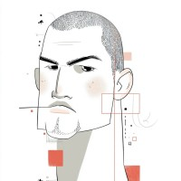

Madison is our teaching framework. Most students build on it.
If you have a stronger idea that targets your career, pitch it. Same standards apply.
Working prototype, technical documentation, portfolio case study.
Brand strategy, UVP, and visual identity system.
Live portfolio website and tailored resumes.
At least one published article and an active LinkedIn presence.
Everything you build ships publicly. Nothing stays in a classroom folder.
Design, implement, and document an AI-powered tool (using Madison or an approved original concept) with a working prototype and technical documentation.
Build a brand identity system from strategy through visual identity to published storytelling.
Assemble a deployment-ready portfolio: live website, tailored resumes, LinkedIn profile, published article.
Deliver a 10-slide Madison Pitch that demonstrates both technical implementation and brand thinking.
Every assignment ladders to at least one of these.
Madison framework deep dive. Ideation, MVP, documentation.
You learn the system and start contributing to it.
Brand strategy, visual identity, portfolio site, storytelling.
AI-powered image creation, video, and content.
LinkedIn, social media, resumes, pitch decks, final presentations.
You put the work in front of real audiences.
The detailed week-by-week schedule is on Canvas.
80% of your grade: did you build it, submit it, and meet the requirements?
20% of your grade: how does your work compare to the room?
That 20% is subjective. So is every hiring decision, client presentation, and investor pitch you'll ever face. Get used to it here.
Rubric details are on Canvas.
Some familiarity with AI tools (ChatGPT, Claude, Canva, etc.).
Some programming experience. Deep technical knowledge is not required.
Willingness to build in public.
Madison framework architecture and applications.
Brand strategy, storytelling, and visual identity.
AI creative workflows: n8n, Figma, V0.dev, Midjourney.
Portfolio construction and pitch delivery.
If you don't have experience with any of these tools, we'll get you there.
By Week 14, you'll be wearing a lot of hats.